This is project about creating personal Logistic regression classifier and Comparing the performance with the model creation using the inbuilt library scikit learn.
The dataset for this procject is "Heart Failure Prediction Dataset" downloaded from Kaggle.
The outflow of the project is as:
a. Overview of the data
b. Visualization
c. Data Processing
d. Classifier Modeling
e. Classifier using Scikit learn
f. Comparision and coclustion
#Overview of the data
# Imporiting the required libraries
import numpy as np
import pandas as pd
import seaborn as sns
import matplotlib.pyplot as plt
from matplotlib import style
plt.style.use('dark_background')
import warnings
warnings.filterwarnings('ignore')# Importing the data
df = pd.read_csv('heart.csv')#The simple overview of the data is
df.head(5)| Age | Sex | ChestPainType | RestingBP | Cholesterol | FastingBS | RestingECG | MaxHR | ExerciseAngina | Oldpeak | ST_Slope | HeartDisease | |
|---|---|---|---|---|---|---|---|---|---|---|---|---|
| 0 | 40 | M | ATA | 140 | 289 | 0 | Normal | 172 | N | 0.0 | Up | 0 |
| 1 | 49 | F | NAP | 160 | 180 | 0 | Normal | 156 | N | 1.0 | Flat | 1 |
| 2 | 37 | M | ATA | 130 | 283 | 0 | ST | 98 | N | 0.0 | Up | 0 |
| 3 | 48 | F | ASY | 138 | 214 | 0 | Normal | 108 | Y | 1.5 | Flat | 1 |
| 4 | 54 | M | NAP | 150 | 195 | 0 | Normal | 122 | N | 0.0 | Up | 0 |
#Finding a general sense of the data
df.info()<class 'pandas.core.frame.DataFrame'>
RangeIndex: 918 entries, 0 to 917
Data columns (total 12 columns):
# Column Non-Null Count Dtype
--- ------ -------------- -----
0 Age 918 non-null int64
1 Sex 918 non-null object
2 ChestPainType 918 non-null object
3 RestingBP 918 non-null int64
4 Cholesterol 918 non-null int64
5 FastingBS 918 non-null int64
6 RestingECG 918 non-null object
7 MaxHR 918 non-null int64
8 ExerciseAngina 918 non-null object
9 Oldpeak 918 non-null float64
10 ST_Slope 918 non-null object
11 HeartDisease 918 non-null int64
dtypes: float64(1), int64(6), object(5)
memory usage: 86.2+ KB
#Categorical
features_cat = df.select_dtypes(include = ['object'])
for col in features_cat.columns:
print(col, df[col].unique())Sex ['M' 'F']
ChestPainType ['ATA' 'NAP' 'ASY' 'TA']
RestingECG ['Normal' 'ST' 'LVH']
ExerciseAngina ['N' 'Y']
ST_Slope ['Up' 'Flat' 'Down']
#nan
df.isna().sum().sum()0#Checking if categorical
feature_num = df.select_dtypes(include = [np.number])
for col in feature_num.columns:
print(col, len(df[col].unique()))Age 50
RestingBP 67
Cholesterol 222
FastingBS 2
MaxHR 119
Oldpeak 53
HeartDisease 2
Observations
a. 1 float - Oldpeak, from above information it looks like non categorical
b. 4 int - Age, RestingBP, Cholesterol, FastingBS, MaxHR all are non categorical features
c. Age, RestingBP, Cholesterol, FastingBS, MaxHR, and Oldpeak are continuous variable
c. Sex, ChestPainType, RestingECG, ExerciseAngina, ST_Slope are the categorical features
d. HeartDisease is the target variable with 0 and 1.
#Genrel view of target variable the
xydf = df[['Age', 'Cholesterol', 'HeartDisease']]
xy0 = xydf[xydf['HeartDisease'] == 0]
xy1 = xydf[xydf['HeartDisease'] == 1]
sns.scatterplot(x = 'Age', y = 'Cholesterol', data = xy1, marker = '*', color = 'blue', label = '1');
sns.scatterplot(x = 'Age', y = 'Cholesterol', data = xy0, marker = '+', color = 'yellow', label = '0');
plt.show()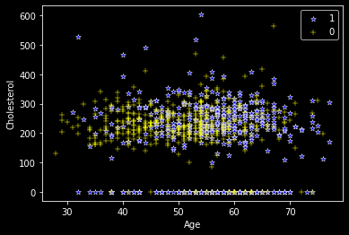
#Visualizing the relation among numerical features
sns.heatmap(df.corr(), annot = True)<matplotlib.axes._subplots.AxesSubplot at 0x7ff5d0260590>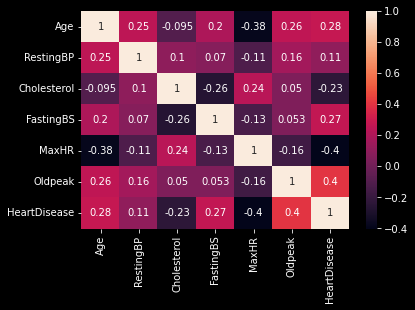
#Visualizing Categoriacal features
categories = df.select_dtypes(include='object')
categories.columnsIndex(['Sex', 'ChestPainType', 'RestingECG', 'ExerciseAngina', 'ST_Slope'], dtype='object')for col in categories.columns:
print(col, categories[col].value_counts(), '\n')Sex M 725
F 193
Name: Sex, dtype: int64
ChestPainType ASY 496
NAP 203
ATA 173
TA 46
Name: ChestPainType, dtype: int64
RestingECG Normal 552
LVH 188
ST 178
Name: RestingECG, dtype: int64
ExerciseAngina N 547
Y 371
Name: ExerciseAngina, dtype: int64
ST_Slope Flat 460
Up 395
Down 63
Name: ST_Slope, dtype: int64
# Let us see if there is any relation of sex, and age with Heart disease
sns.swarmplot(x='Sex', y='Age', hue = 'HeartDisease', data = df);
plt.show()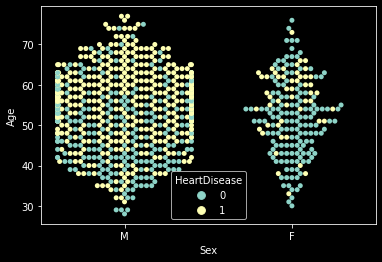
Look like Male have more heart problem than female and the tendency of having heart disease increases with age.
Female mostly get heart disease after 50 but the chance of getting heart disease in male starts even after 40.
# Let us see if there is any relation of sex, and age with Heart disease
sns.swarmplot(x='Sex', y='Cholesterol', hue = 'HeartDisease', data = df);
plt.show();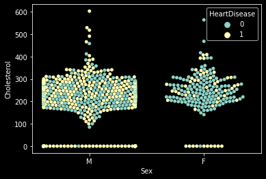
fig = plt.gcf();
fig.set_size_inches(15, 6);
sns.swarmplot(x='Age', y='Cholesterol', hue = 'Sex', data = df);
plt.show();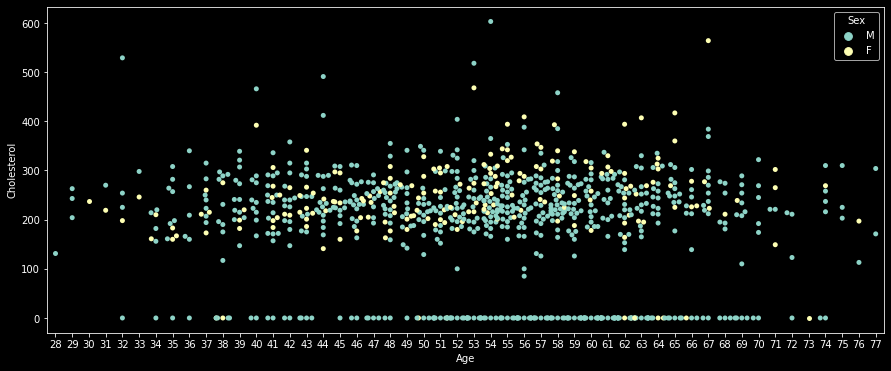
# Distribution of Continuous Variables
for col in ['Age', 'RestingBP', 'Cholesterol', 'MaxHR', 'Oldpeak']:
sns.kdeplot(df[col]);
plt.show()
print('\n')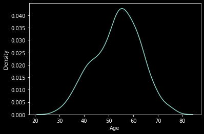
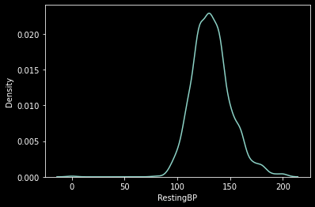
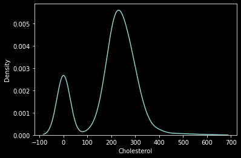
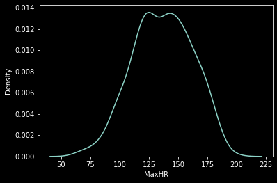
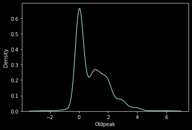
None of the continuous variables are highly skewed. Therefore, no log transformation will be required.
# Separating the features and Target
target = df['HeartDisease']
features = df.drop('HeartDisease', axis = 1)
features.head(5)| Age | Sex | ChestPainType | RestingBP | Cholesterol | FastingBS | RestingECG | MaxHR | ExerciseAngina | Oldpeak | ST_Slope | |
|---|---|---|---|---|---|---|---|---|---|---|---|
| 0 | 40 | M | ATA | 140 | 289 | 0 | Normal | 172 | N | 0.0 | Up |
| 1 | 49 | F | NAP | 160 | 180 | 0 | Normal | 156 | N | 1.0 | Flat |
| 2 | 37 | M | ATA | 130 | 283 | 0 | ST | 98 | N | 0.0 | Up |
| 3 | 48 | F | ASY | 138 | 214 | 0 | Normal | 108 | Y | 1.5 | Flat |
| 4 | 54 | M | NAP | 150 | 195 | 0 | Normal | 122 | N | 0.0 | Up |
# Encoding the categorical variables
##Every column having more than two unique values will be splitted in the number of values that column have
def LabelEncoder(df, col):
unique_values = list(df[col].unique())
for value in unique_values:
column = col + '_' + value
df[column] = df[col].apply(lambda x : 1 if x == value else 0)
df.drop(col, axis = 1, inplace = True)
return(df)
for col in ['ChestPainType', 'RestingECG', 'ST_Slope', 'Sex']:
features = LabelEncoder(features, col)
#Encoding ExercisAngina
features['ExerciseAngina'] = features['ExerciseAngina'].apply(lambda x : 1 if x == 'Y' else 0)
features.head(5)| Age | RestingBP | Cholesterol | FastingBS | MaxHR | ExerciseAngina | Oldpeak | ChestPainType_ATA | ChestPainType_NAP | ChestPainType_ASY | ChestPainType_TA | RestingECG_Normal | RestingECG_ST | RestingECG_LVH | ST_Slope_Up | ST_Slope_Flat | ST_Slope_Down | Sex_M | Sex_F | |
|---|---|---|---|---|---|---|---|---|---|---|---|---|---|---|---|---|---|---|---|
| 0 | 40 | 140 | 289 | 0 | 172 | 0 | 0.0 | 1 | 0 | 0 | 0 | 1 | 0 | 0 | 1 | 0 | 0 | 1 | 0 |
| 1 | 49 | 160 | 180 | 0 | 156 | 0 | 1.0 | 0 | 1 | 0 | 0 | 1 | 0 | 0 | 0 | 1 | 0 | 0 | 1 |
| 2 | 37 | 130 | 283 | 0 | 98 | 0 | 0.0 | 1 | 0 | 0 | 0 | 0 | 1 | 0 | 1 | 0 | 0 | 1 | 0 |
| 3 | 48 | 138 | 214 | 0 | 108 | 1 | 1.5 | 0 | 0 | 1 | 0 | 1 | 0 | 0 | 0 | 1 | 0 | 0 | 1 |
| 4 | 54 | 150 | 195 | 0 | 122 | 0 | 0.0 | 0 | 1 | 0 | 0 | 1 | 0 | 0 | 1 | 0 | 0 | 1 | 0 |
#Trasnformation of continuous variables
def scalar(df, col):
max = df[col].max()
min = df[col].min()
range = max - min
df[col] = (df[col] - min)/range
return(df)
for col in ['Age', 'RestingBP', 'Cholesterol', 'MaxHR', 'Oldpeak']:
scalar(features, col)
features.head(5)| Age | RestingBP | Cholesterol | FastingBS | MaxHR | ExerciseAngina | Oldpeak | ChestPainType_ATA | ChestPainType_NAP | ChestPainType_ASY | ChestPainType_TA | RestingECG_Normal | RestingECG_ST | RestingECG_LVH | ST_Slope_Up | ST_Slope_Flat | ST_Slope_Down | Sex_M | Sex_F | |
|---|---|---|---|---|---|---|---|---|---|---|---|---|---|---|---|---|---|---|---|
| 0 | 0.244898 | 0.70 | 0.479270 | 0 | 0.788732 | 0 | 0.295455 | 1 | 0 | 0 | 0 | 1 | 0 | 0 | 1 | 0 | 0 | 1 | 0 |
| 1 | 0.428571 | 0.80 | 0.298507 | 0 | 0.676056 | 0 | 0.409091 | 0 | 1 | 0 | 0 | 1 | 0 | 0 | 0 | 1 | 0 | 0 | 1 |
| 2 | 0.183673 | 0.65 | 0.469320 | 0 | 0.267606 | 0 | 0.295455 | 1 | 0 | 0 | 0 | 0 | 1 | 0 | 1 | 0 | 0 | 1 | 0 |
| 3 | 0.408163 | 0.69 | 0.354892 | 0 | 0.338028 | 1 | 0.465909 | 0 | 0 | 1 | 0 | 1 | 0 | 0 | 0 | 1 | 0 | 0 | 1 |
| 4 | 0.530612 | 0.75 | 0.323383 | 0 | 0.436620 | 0 | 0.295455 | 0 | 1 | 0 | 0 | 1 | 0 | 0 | 1 | 0 | 0 | 1 | 0 |
The features having continuous values are scaled are between 0 and 1. The features having categorical values are ecnoded with 0 and 1. Now the dataset is ready for preparing the model.
It is known that the hypothesis function for Logistic regression classifier is
$ h(X) = \frac{1}{1 + e^{-Z}}$, where Z = Xθ
Let the dataset has m features and n samples then,
n = features.shape[0] #number of samples
m = features.shape[1] #number of features
features_mat = features.to_numpy()
X = np.hstack((np.ones((n, 1)), features_mat)) #adding column of 1
print("X", "\n", X[0:3, :])
Y = target.to_numpy()
print("Y", '\n', Y[:10])X
[[1. 0.24489796 0.7 0.47927032 0. 0.78873239
0. 0.29545455 1. 0. 0. 0.
1. 0. 0. 1. 0. 0.
1. 0. ]
[1. 0.42857143 0.8 0.29850746 0. 0.67605634
0. 0.40909091 0. 1. 0. 0.
1. 0. 0. 0. 1. 0.
0. 1. ]
[1. 0.18367347 0.65 0.46932007 0. 0.26760563
0. 0.29545455 1. 0. 0. 0.
0. 1. 0. 1. 0. 0.
1. 0. ]]
Y
[0 1 0 1 0 0 0 0 1 0]
ntrain = round(0.8*n) #test_size = 0.2
xtrain = X[0:ntrain, :]
xtest = X[ntrain:n+1,:]
ytrain = Y[0:ntrain]
ytest = Y[ntrain:]np.size(ytrain)734# Hypothesis function
def sigma(xtrain,theta):
z = np.matmul(xtrain, theta)
ze = np.exp(-z)
hx = 1 / (1 + ze)
return(z, hx)
#Cost function
def costf(z,hx,ytrain):
c1 = np.matmul(ytrain, np.log(hx))
c2 = np.matmul((1-ytrain), np.log(1-hx))
cost = -(c1+c2)/n
return(cost)
#Optimization of cost function
def Optimize(xtrain,ytrain,repeat,eta):
n = np.shape(xtrain)[0]
theta = np.random.random(np.shape(xtrain)[1]) #initialization of theta
cost_list = [] #list of cost calculated for a learning rate for visualizing the variation of cost
for i in range(repeat):
(z, hx) = sigma(xtrain,theta)
nabla = np.matmul(xtrain.transpose(), (hx-ytrain))/n #the gredient
theta = theta - eta*nabla
cost_list.append(costf(z,hx,ytrain))
return(theta, cost_list)
#predicting labels
def predict(xtest,theta):
(z, hx) = sigma(xtest,theta)
ypred = np.array([1 if x>=0.5 else 0 for x in hx])
return(ypred)
#Creatig confusion matrix
def creat_cm(ytest,ypred):
cm = pd.DataFrame(columns=['predicted 0', 'predicted 1'])
(zero, zeroOne, one, oneZero) = (0,0,0,0)
for i in range(np.size(ytest)):
if ytest[i] == 0 and ypred[i] == 0:
zero = zero + 1
if ytest[i] == 0 and ypred[i] == 1:
zeroOne = zeroOne + 1
if ytest[i] == 1 and ypred[i] == 1:
one = one + 1
if ytest[i] == 1 and ypred[i] == 0:
oneZero = oneZero + 1
cm.loc['Actual 0'] = [zero, zeroOne]
cm.loc['Actual 1'] = [oneZero, one]
return(cm)
#the Decision metrics
def metrics(cm):
metric = {}
n = cm['predicted 0'].sum() + cm['predicted 1'].sum()
metric['accuracy'] = (cm['predicted 0'].loc['Actual 0'] + cm['predicted 1'].loc['Actual 1'])/n
metric['precision'] = (cm['predicted 1'].loc['Actual 1'])/(cm['predicted 1'].loc['Actual 1'] + cm['predicted 1'].loc['Actual 0'])
metric['recall'] = (cm['predicted 1'].loc['Actual 1'])/(cm['predicted 1'].loc['Actual 1'] + cm['predicted 0'].loc['Actual 1'])
metric['F-1 Score'] = 2*metric['precision']*metric['recall']/(metric['precision']+metric['recall'])
return(metric)
#classifier Modeling
def classifier(xtrain,ytrain,eta_list,xtest,ytest,repeat):
reports = pd.DataFrame(columns = ['eta', 'accuracy', 'precision', 'recall', 'F-1 Score'])
predicted_values = pd.DataFrame()
predicted_values['Actual label'] = ytest
cost_variation = {}
theta_variation = {}
for eta in eta_list:
(theta, cost_list) = Optimize(xtrain,ytrain,repeat,eta)
cost_variation[eta] = cost_list
theta_variation[eta] = theta
ypred = predict(xtest,theta)
predicted_values['label_'+str(eta)] = ypred
cm = creat_cm(ytest,ypred)
metric = metrics(cm)
metric['eta'] = eta
reports = reports.append(metric, ignore_index=True)
return(cost_variation, reports, predicted_values,theta_variation)eta_list = [0.0001, 0.001, 0.01, 0.1]
(cost_variation, reports, predicted_values,theta_variation) = classifier(xtrain, ytrain, eta_list, xtest, ytest, 1000)fig = plt.gcf();
fig.set_size_inches(8,6)
for key in cost_variation.keys():
y = cost_variation[0.01]
x = list(range(len(y)))
sns.lineplot(x,y,label=key)
plt.show()reports| eta | accuracy | precision | recall | F-1 Score | |
|---|---|---|---|---|---|
| 0 | 0.0001 | 0.467391 | 0.467391 | 1.000000 | 0.637037 |
| 1 | 0.0010 | 0.467391 | 0.467391 | 1.000000 | 0.637037 |
| 2 | 0.0100 | 0.750000 | 0.700000 | 0.813953 | 0.752688 |
| 3 | 0.1000 | 0.771739 | 0.755814 | 0.755814 | 0.755814 |
eta_list = [ 0.001, 0.01, 0.1]
classifier(xtrain,ytrain,xtest,ytest,1000,eta_list)eta = 0.001
{'accuracy': 0.7717391304347826, 'precision': 0.7558139534883721, 'Recall': 0.7558139534883721, 'F-1 Score': 0.755813953488372}
eta = 0.01
{'accuracy': 0.7771739130434783, 'precision': 0.7528089887640449, 'Recall': 0.7790697674418605, 'F-1 Score': 0.7657142857142858}
eta = 0.1
{'accuracy': 0.7771739130434783, 'precision': 0.7777777777777778, 'Recall': 0.7325581395348837, 'F-1 Score': 0.7544910179640719}
<Figure size 720x432 with 0 Axes>def costf(z,hx,ytrain):
ze = np.exp(z)
n = np.size(z)
hxx = 1 / (1 + ze)
cost = np.sum((np.log(hxx) + np.matmul(ytrain, z))/n)
return(cost)for eta in eta_list:
print(eta,'\n',theta_variation[eta])0.0001
[0.13349684 0.47694926 0.43077015 0.52900916 0.48727437 0.26937076
0.23072645 0.00924484 0.61460649 0.50958201 0.82342853 0.29419408
0.34490218 0.05078802 0.66607007 0.16807083 0.88205953 0.43074446
0.07643548 0.83354775]
0.001
[0.11835009 0.21368097 0.58354663 0.81176857 0.10913029 0.37737561
0.62274339 0.0669014 0.11756649 0.25770441 0.00958604 0.82504812
0.19794057 0.57433793 0.44230805 0.47253602 0.446914 0.85548406
0.20022754 0.21266521]
0.01
[-0.85283432 0.18676266 -0.47008446 0.06298485 0.51365889 -0.04134847
0.8058665 0.46953883 -0.48708716 -0.21609037 0.72749412 0.12102221
0.20783877 0.34480201 0.65319209 -0.90482245 0.47435321 0.21309659
0.45313793 0.24421899]
0.1
[-0.3409352 -0.05617829 -0.03456318 -0.8920723 1.51032323 -0.90232064
0.86431808 0.90235451 -0.74694836 -0.1237637 1.23023006 0.3375241
-0.32851373 -0.22310954 -0.13899839 -1.43491515 1.35586258 0.19553387
0.38180144 -0.79421407]
1
[-0.70686306 0.44682114 0.31856058 -2.55160511 1.6110569 -0.85191257
0.81043707 1.45116236 -0.76555174 -0.20621917 1.24847406 0.27327992
0.01222114 -0.05063459 0.2430166 -1.58712206 1.37432028 -0.15008021
0.32694027 -0.83658276]
reports| eta | accuracy | precision | recall | F-1 Score | |
|---|---|---|---|---|---|
| 0 | 0.0001 | 0.467391 | 0.467391 | 1.000000 | 0.637037 |
| 1 | 0.0010 | 0.467391 | 0.467391 | 1.000000 | 0.637037 |
| 2 | 0.0100 | 0.728261 | 0.666667 | 0.837209 | 0.742268 |
| 3 | 0.1000 | 0.777174 | 0.758621 | 0.767442 | 0.763006 |
np.matmul(ytrain,z)1940.6362736316646cost = costf(z,hx,ytrain)#Using Scikit learn
from sklearn.model_selection import train_test_split
xtrain, xtest, ytrain, ytest = train_test_split(features, target, test_size = 0.3, random_state = 0)
from sklearn.linear_model import LogisticRegression
classifier = LogisticRegression(random_state = 0)
classifier.fit(xtrain, ytrain)
ypred = classifier.predict(xtest)
from sklearn.metrics import accuracy_score, ConfusionMatrixDisplay, confusion_matrix, classification_report
cm = confusion_matrix(ytest, ypred)
report = classification_report(ytest, ypred)print(report) precision recall f1-score support
0 0.82 0.77 0.79 113
1 0.85 0.88 0.86 163
accuracy 0.84 276
macro avg 0.83 0.83 0.83 276
weighted avg 0.84 0.84 0.84 276
eta_list = [0.1]
(cost_variation, reports, predicted_values,theta_variation) = classifier(xtrain, ytrain, eta_list, xtest, ytest, 1000)reports.transpose()| 0 | |
|---|---|
| eta | 0.100000 |
| accuracy | 0.771739 |
| precision | 0.755814 |
| recall | 0.755814 |
| F-1 Score | 0.755814 |
#Visulaizing the prediction
df_pre = df.iloc[ntrain:]
df_pre = df_pre[['Age', 'Cholesterol']]
df_pre['Actual label'] = list(predicted_values['Actual label'])
df_pre['predicted'] = list(predicted_values['label_0.1'])
true = df_pre[df_pre['Actual label'] == df_pre['predicted']]
false = df_pre[df_pre['Actual label'] != df_pre['predicted']]
sns.scatterplot(x = 'Age', y = 'Cholesterol', data = true, marker = '*', color = 'blue', label = 'predicted_true');
sns.scatterplot(x = 'Age', y = 'Cholesterol', data = false, marker = '+', color = 'yellow', label = 'predicted_false');
plt.show()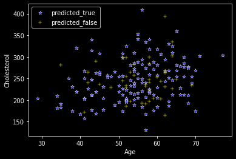
false| Age | Cholesterol | Actual label | predicted | |
|---|---|---|---|---|
| 734 | 56 | 283 | NaN | NaN |
| 735 | 49 | 188 | NaN | NaN |
| 736 | 54 | 286 | NaN | NaN |
| 737 | 57 | 274 | NaN | NaN |
| 738 | 65 | 360 | NaN | NaN |
| ... | ... | ... | ... | ... |
| 913 | 45 | 264 | NaN | NaN |
| 914 | 68 | 193 | NaN | NaN |
| 915 | 57 | 131 | NaN | NaN |
| 916 | 57 | 236 | NaN | NaN |
| 917 | 38 | 175 | NaN | NaN |
184 rows × 4 columns
predicted_values| Actual label | label_0.1 | |
|---|---|---|
| 0 | 1 | 1 |
| 1 | 1 | 1 |
| 2 | 1 | 1 |
| 3 | 1 | 1 |
| 4 | 0 | 0 |
| ... | ... | ... |
| 179 | 1 | 1 |
| 180 | 1 | 1 |
| 181 | 1 | 1 |
| 182 | 1 | 0 |
| 183 | 0 | 0 |
184 rows × 2 columns